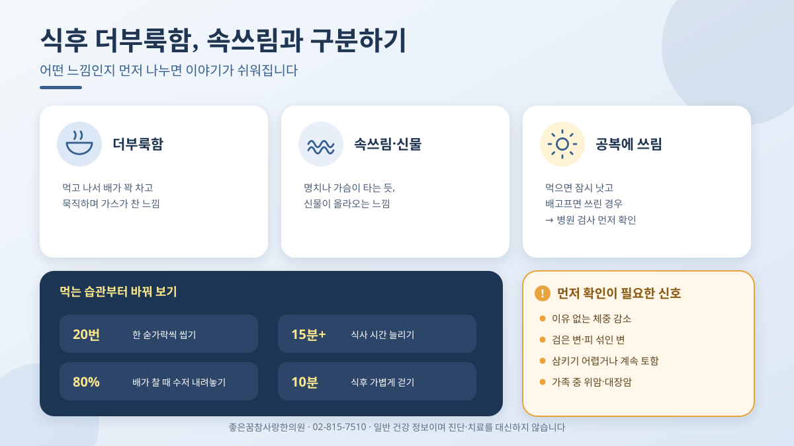
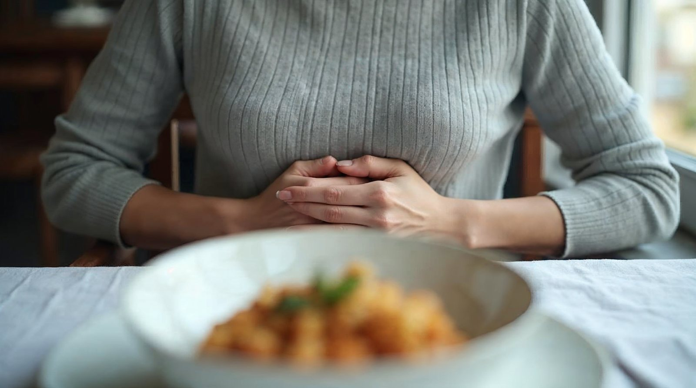
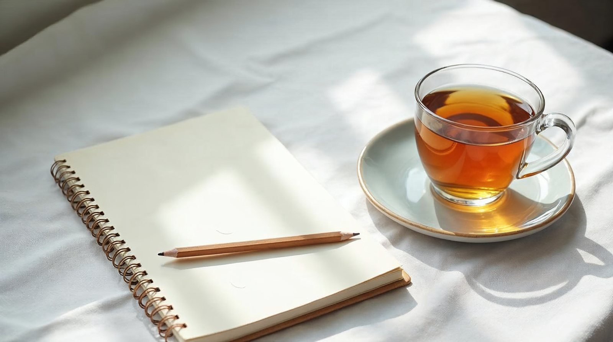

식후 더부룩함은 먹는 속도와 양, 음식 종류, 변 상태, 잠과 스트레스가 겹쳐 생기는 경우가 많아 함께 살피고, 공복 속쓰림이나 체중 감소·검은 변 같은 경고 신호가 있으면 먼저 병원 검사를 권합니다.
여쭙는 것
- 먹고 나서 몇 분 뒤에, 얼마나 오래 불편한가요?
- 불편이 커지는 음식이나 상황이 있나요?
- 대변은 규칙적인가요? 묽거나 변비가 있나요?
생활에서 해 볼 것
- 한 숟가락에 20번 정도 씹고, 식사 시간을 15분 이상으로 늘리기
- 한 번에 먹는 양을 줄이고, 배가 80% 정도 찼을 때 수저 내려놓기
- 식사 직후 바로 눕지 말고 10분쯤 가볍게 걷기
한의원에서 함께 살필 것
- 식사 뒤 배가 쉽게 차고 트림이나 더부룩함이 이어지는 경우 소화 기능과 식사 속도를…
- 조금만 먹어도 금방 불편한 경우 위장의 움직임과 몸의 긴장 상태를 살핍니다.
- 스트레스가 많은 날 소화가 더딘 경우 몸따삶잘(몸의 온기, 소화, 잠, 대소변, 통…
먼저 확인이 필요한 신호
- 이유 없이 체중이 줄어드는 경우
- 검은 변이나 피가 섞인 변이 나오는 경우
- 음식을 삼키기 어렵거나 계속 토하는 경우

식사 뒤 속이 더부룩한 것은 급하게 먹는 습관, 음식 종류, 변비, 잠과 스트레스가 겹쳐 생기는 경우가 많아 언제, 어떤 음식 뒤에 심한지부터 살핍니다. 같은 "속이 안 좋다"라도 더부룩함과 속쓰림은 서로 다른 신호일 수 있어 구분해서 보는 것이 첫걸음입니다.

더부룩함과 속쓰림은 이렇게 다릅니다
- 더부룩함: 먹고 나서 배가 꽉 차고 묵직하며, 가스가 찬 듯한 느낌
- 속쓰림·신물: 명치나 가슴 쪽이 타는 듯하거나 신물이 올라오는 느낌
- 공복에 쓰린 느낌: 밥을 먹으면 잠시 나아지고 배가 고프면 쓰린 경우는 병원 검사가 필요한지 먼저 확인합니다.
두 가지가 함께 나타나는 분도 많아서, 어느 쪽이 더 크고 언제 심한지를 정리해 두면 진료에 도움이 됩니다.
왜 이런 불편이 생길 수 있나요
- 급하게, 많이 먹으면 위가 한꺼번에 늘어나 묵직함을 느끼기 쉽습니다.
- 기름진 음식, 밀가루, 찬 음식, 탄산, 커피가 불편을 키우는 분이 있습니다.
- 변비나 가스가 함께 있으면 배 전체가 더 답답하게 느껴질 수 있습니다.
- 잠이 부족하거나 긴장이 많은 시기에는 위장의 움직임이 더뎌지는 경우가 있습니다.
검사에서 특별한 원인이 보이지 않는데 식후 불편이 오래 이어지면 기능성 소화불량이라고 부르기도 합니다. 다만 검사로 확인해야 하는 질환이 숨어 있을 수 있어 경고 신호를 먼저 확인합니다.
자주 하는 오해
- 더부룩하면 소화제를 먹으면 된다고 여기기 쉽지만, 자주 반복된다면 먹는 속도와 양, 변 상태, 잠을 함께 돌아보는 편이 먼저입니다.
- 식후 바로 누워 쉬면 소화가 잘된다고 생각하기 쉽지만, 바로 누우면 오히려 답답함이나 신물이 생기는 분이 있어 10분쯤 가볍게 걷는 편이 낫습니다.
- 밥을 거르면 속이 편해진다고 여기기 쉽지만, 끼니를 건너뛴 뒤 한꺼번에 많이 먹으면 더부룩함이 더 커질 수 있습니다.
- 검사에서 이상이 없으면 마음 탓이라고 생각하기 쉽지만, 불편은 실제로 있는 것이어서 식사·잠·긴장의 흐름을 함께 살핍니다.
예를 들면 이런 경우입니다
- 예를 들어 점심을 10분 안에 먹고 바로 책상에 앉는 직장인이라면, 오후에 배가 꽉 차는 시각과 식사 시간을 함께 기록해 보며 살핍니다.
- 예를 들어 시험 기간에 긴장하면 조금만 먹어도 체한 듯한 수험생이라면, 소화와 함께 잠과 긴장 상태를 같이 여쭙습니다.
- 예를 들어 입맛은 있는데 먹고 나면 오래 더부룩하다는 어르신이라면, 씹는 상태와 대변, 복용 중인 약을 함께 확인합니다.
먼저 이렇게 여쭙니다
- 먹고 나서 몇 분 뒤에, 얼마나 오래 불편한가요?
- 불편이 커지는 음식이나 상황이 있나요?
- 대변은 규칙적인가요? 묽거나 변비가 있나요?
- 잠과 스트레스는 어떤가요?
- 손발이나 배가 찬 편인가요?

일상에서 먼저 해 볼 수 있는 것
- 한 숟가락에 20번 정도 씹고, 식사 시간을 15분 이상으로 늘리기
- 한 번에 먹는 양을 줄이고, 배가 80% 정도 찼을 때 수저 내려놓기
- 식사 직후 바로 눕지 말고 10분쯤 가볍게 걷기
- 늦은 야식과 탄산, 과한 카페인 줄이기
- 불편을 키우는 음식을 일주일만 기록해 보기
- 식사 중 화면을 보지 않고 먹는 데 집중하기
스스로 점검해 보세요
- 식사 시간이 10분이 채 안 된다
- 조금만 먹어도 금방 배가 찬다
- 식후 더부룩함이 2시간 넘게 이어지는 날이 많다
- 트림이나 가스가 자주 차서 배가 빵빵하다
- 변비나 묽은 변이 번갈아 나타난다
- 긴장하거나 잠이 부족한 날 더 심하다
- 손발이나 배가 찬 편이다
여러 항목에 해당한다면 진료 때 그대로 말씀해 주세요. 무엇부터 바꿔 볼지 정하는 데 도움이 됩니다.
얼마나 지켜보고, 언제 상담하면 좋을까요
- 과식한 날 하루 이틀 더부룩한 정도라면 식사량과 속도를 조절하며 지켜볼 수 있습니다.
- 생활을 바꿔도 더부룩함이 2~4주 넘게 이어지거나 일주일에 여러 번 반복된다면 진료를 받아 보시길 권합니다.
- 체중이 이유 없이 줄거나, 검은 변이나 혈변, 삼킴 곤란, 계속되는 구토가 있다면 기다리지 말고 내과 검사를 먼저 받으세요.
한의원에서 함께 살필 수 있는 경우
- 식사 뒤 배가 쉽게 차고 트림이나 더부룩함이 이어지는 경우 소화 기능과 식사 속도를 함께 살핍니다.
- 조금만 먹어도 금방 불편한 경우 위장의 움직임과 몸의 긴장 상태를 살핍니다.
- 스트레스가 많은 날 소화가 더딘 경우 몸따삶잘(몸의 온기, 소화, 잠, 대소변, 통증과 생활)의 눈으로 생활 리듬을 함께 봅니다.
좋은꿈참사랑한의원에서는 불편이 생기는 때와 식사 습관을 먼저 충분히 듣고, 진맥을 기본으로 하고 필요하다고 판단될 때 설진·복진을 더해 몸 상태를 살핀 뒤 침이나 한약 상담 등 상태에 맞는 방법을 정합니다. 귀가 전에는 집에서 지켜볼 점과 다음에 확인할 일을 알려 드립니다.
첫 방문에는 불편이 언제, 어떤 음식 뒤에 시작되는지 먼저 듣고 경고 신호가 없는지 확인합니다. 이어서 진맥을 짚고 혀와 배를 살펴 소화 상태와 배의 긴장을 봅니다. 필요하다고 판단되면 인바디 770 같은 원내 장비로 몸 상태를 함께 확인하고, 가져오신 식사 기록과 대변 메모, 내시경 결과를 같이 봅니다. 그런 다음 지금 더부룩함이 식사 습관인지, 장의 움직임인지, 긴장과 잠인지 설명드리고 치료 방향과 다음 진료까지 바꿔 볼 식사 습관 한 가지를 함께 정합니다.

이렇게 기록해 오시면 상담이 쉬워집니다
- 불편했던 날의 식사 시간, 먹은 음식, 먹은 속도
- 더부룩함이 시작된 시각과 이어진 시간
- 대변 횟수와 모양
- 복용 중인 위장약, 진통소염제, 아스피린 등 약 이름
이런 증상은 먼저 확인이 필요합니다
- 이유 없이 체중이 줄어드는 경우
- 검은 변이나 피가 섞인 변이 나오는 경우
- 음식을 삼키기 어렵거나 계속 토하는 경우
- 빈혈이 있다는 말을 들은 경우
- 나이가 들어 새로 생긴 소화 증상이 점점 심해지거나, 가족 중에 위암·대장암이 있는 경우
이런 신호가 있으면 내시경 같은 검사를 먼저 받으세요. 먹는 약은 임의로 끊거나 줄이지 마시고 처방한 의사와 상의해야 합니다.
함께 읽으면 좋은 글
- 밥을 빨리 먹는 습관이 소화에 어떤 영향을 주나요?
- 트림과 가스가 자주 차고 배가 빵빵할 때는 어떤 점을 살펴보나요?
- 속쓰림과 신물이 오래 갈 때 어떤 점을 살펴보고, 언제 검사를 받아야 하나요?
한눈에 보는 표
| 구분 | 핵심 |
|---|---|
| 여쭙는 것 | 먹고 나서 몇 분 뒤에, 얼마나 오래 불편한가요? 불편이 커지는 음식이나 상황이 있나요? |
| 생활에서 해 볼 것 | 한 숟가락에 20번 정도 씹고, 식사 시간을 15분 이상으로 늘리기 한 번에 먹는 양을 줄이고, 배가 80% 정도 찼을 때 수저 내려놓기 |
| 한의원에서 함께 살필 것 | 식사 뒤 배가 쉽게 차고 트림이나 더부룩함이 이어지는 경우 소화 기능과 식사 속도를 함께 살핍니다. 조금만 먹어도 금방 불편한 경우 위장의 움직임과 몸의 긴장 상태를 살핍니다. |
| 먼저 확인이 필요한 신호 | 이유 없이 체중이 줄어드는 경우 검은 변이나 피가 섞인 변이 나오는 경우 |
자주 묻는 질문
식후 더부룩함은 한의원에서 어떻게 살피나요?
불편이 생기는 시점, 음식, 대변 상태를 먼저 묻고 잠·스트레스·몸의 온기와 함께 생활 전체의 리듬 속에서 살핍니다.
더부룩함과 속쓰림은 어떻게 다른가요?
더부룩함은 배가 꽉 차고 묵직한 느낌이고, 속쓰림은 명치나 가슴이 타는 듯하거나 신물이 올라오는 느낌입니다. 함께 나타나는 경우도 많습니다.
내시경 검사를 먼저 받아야 하나요?
체중 감소, 혈변이나 검은 변, 삼킴 곤란, 지속적인 구토, 빈혈 같은 경고 신호가 있으면 먼저 병원 검사를 권합니다.
소화제를 먹고 있는데 진료받을 수 있나요?
네, 복용 중인 약을 모두 알려 주세요. 약은 임의로 끊거나 줄이지 마시고 처방한 의사와 상의해야 합니다.
이 글은 일반적인 건강 정보이며 개인의 진단이나 치료를 대신하지 않습니다. 증상이 있거나 복용 중인 약이 있다면 진료를 통해 확인하세요. 치료 효과는 개인마다 다를 수 있습니다.
작성 기준: 일반적으로 알려져 있는 건강 정보를 참고해 정리했습니다(대표원장 감수). 증상 기록은 1~2주 동안 하루 1회, 비슷한 시간에 적어 오시면 지난 상태와 비교하기 쉽습니다.
좋은꿈참사랑한의원은 재진 때 지난번 이야기부터 이어서 여쭙니다. 진료시간과 예약은 오시는 길에서 확인하세요.
어디서 상담받을 수 있나요?
좋은꿈참사랑한의원은 서울 동작구 만양로2길 2 신성빌딩 3층·5층(서울 동작구 상도동, 7호선 상도역 3번 출구 근처)에 있습니다. 한의사 3명(이종호 대표원장, 조영기 수석진료원장, 정원영 진료원장)이 진료합니다. 진료시간은 평일 09:30~20:00(점심 13:00~14:00), 토·일·공휴일 09:30~15:00이며, 방문 전 전화로 확인을 권합니다. 예약은 네이버 예약, 카카오톡 상담, 전화 02-815-7510로 받습니다.